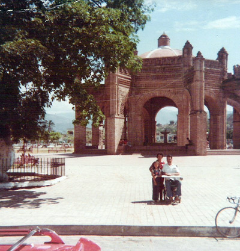

Tuxtla Gutierrez is the capital city of the Mexican state of Chiapas, the state in which Tapachula is another major metropolitan center. Tuxtla G. became a part of my story in the following way.
The main reason I found the institute in Tapachula was that a young Bahá'í man, Steve Angel, was there for the year 1979-80, giving classes and already serving as a pioneer. An article about him appeared in an issue of the American Bahá'í, a periodical of news and such for the followers of this Faith. I contacted him. The result was an offer to teach English there. As has been explained, the institute offered a one-year deal to its teachers. When it was my turn to work there, Steve had to move on. He wished to stay in Mexico. So he found a job teaching English in a large school in Tuxtla. When it came time for me to do likewise, I thought it might be worth an attempt to apply there myself. Prior to my illness of March 31 and the receipt of Nancy's letter, we had planned an exploratory trip to investigate the possibilities. I saw no reason why we shouldn't continue with those plans.
On April 10, we set out. The drive went well, and we arrived around noon. We found a hotel in which to spend the night. The city was interesting and colorful, but the interview at the "Tech", as the school was called, did not produce any positive results. The following day we left for another spot that proved to have positive results of a very different sort. The town was Chiapa de Corzo, just a few kilometers eastward. This quaint little town has much in its favor, regarding traditional arts and crafts. The photo below shows Gloria, Areli, and I in front of a famous landmark - La Fuente Colonial [= The Colonial Fountain], completed in 1562. It's also known as La Pila which is considered the most beautiful Mudejar-style fountain in the world.
 Terry, Gloria and Areli, at La Fuente Colonial For Gloria and me, it is an unforgettable town because it was here that we bought her wedding dress! It was a beautiful, white dress, of the traditional style of this region. (See photos in a later chapter.) Actually, we just contracted for its preparation at this time, leaving a deposit. A couple of weeks later, a friend of mine went to pick it up and bring it to us.
We traveled on to San Cristobal, where we ate lunch. Further down the road in Comitan, the van began acting up - it didn't want to start. Visions of being stranded far from home began passing through my mind. Somehow the ol' girl rose to the occasion and carried us onward. We arrived in Comalapa around 7:30 in the evening, where we spent the night. The next day we completed our journey without incident. A happy end to that day occurred with Rosa's return from El Salvador, accompanied by her fiancée, Nelson. Gloria and I marked this little event by taking them to the central park, where I could get to know another future member of the family. Nelson, as events were to develop, became an integral part of the team now, the driver of the van. The jig-saw pieces were gradually being placed on the board to form a clearer picture of our future success.
| Comments? Send e-mail. |
Back to top |
Go back to Contents |